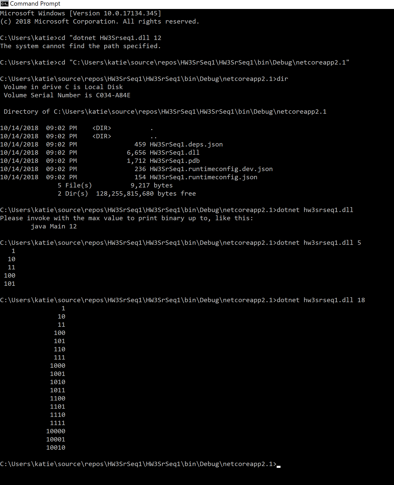

Translate a java app into C#
I downloaded Visual Studio Community 2017. That took way longer than expected. Then I downloaded java application which I opened in inteliJ.
I did this part twice because I was dumb and tried to do it in Visual Studio code which doesn't do diddly squat. Then I typed it up in Visual Studio Community 2017. It basically yelled at me every so often to go look something up.
In typing these things up in Visual Studio Community, it opened with a boilerplate namespace. Thus I fundementally misunderstood what a namespace is, and thought that I was supposed to put all of the classes into that namespace on that one file. Needless to say, that didn't go over well. Additonally, I had some major problems with brainfarting and naming a class "Main" which the code did not like at all.
I committed once on the main branch while thinking I was committing to the feature branch, but I eventually got onto the feature branch. As of my writing this, I have not committed to the main branch while the feature branch had commits, but I intend to put this blog post onto the main branch while the feature branch is unmerges and has some pushes on it.
I added a gititnore file from the github gitignore repository . I was messing with making the folders look pretty, and I accidentally deleted the gitignore file for a push. Whoops! I fixed it though.
Yes, I hand typed everything. Unfortunately I didn't impliment things in the recommended order, but since I had a fundemental misunderstanding of what namespaces were for, I didn't make seperate file for each class while typing it up.
I'm fairly sure the code works like it's supposed to. From what I gathered, the code in java takes an argument and counts up to that number in binary. The C# code does the same thing:
